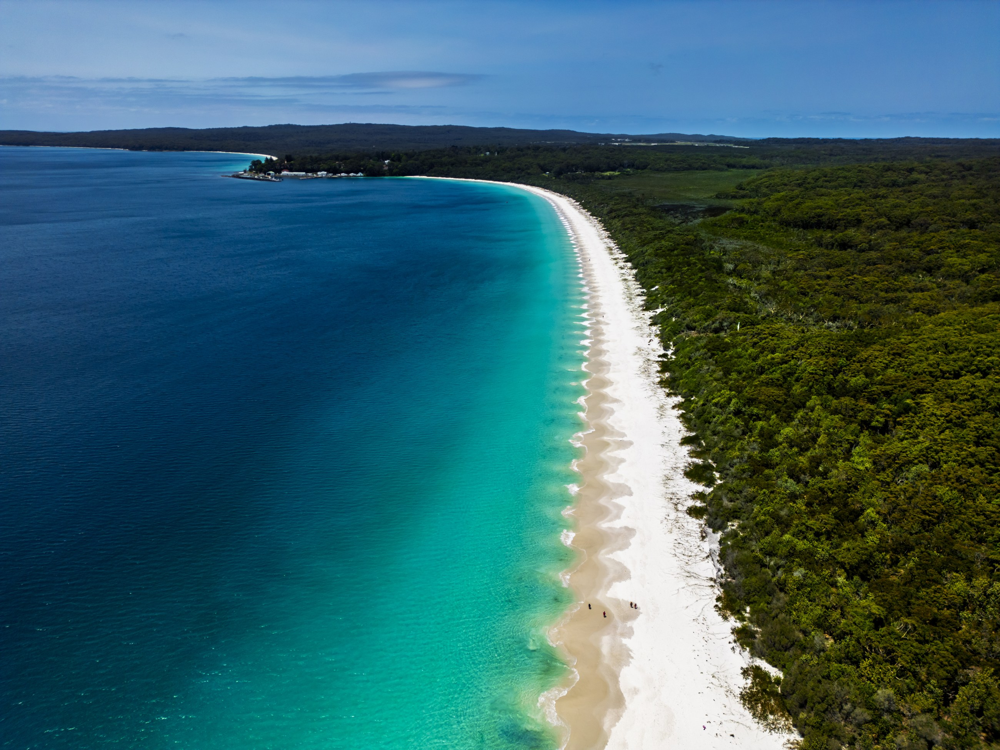
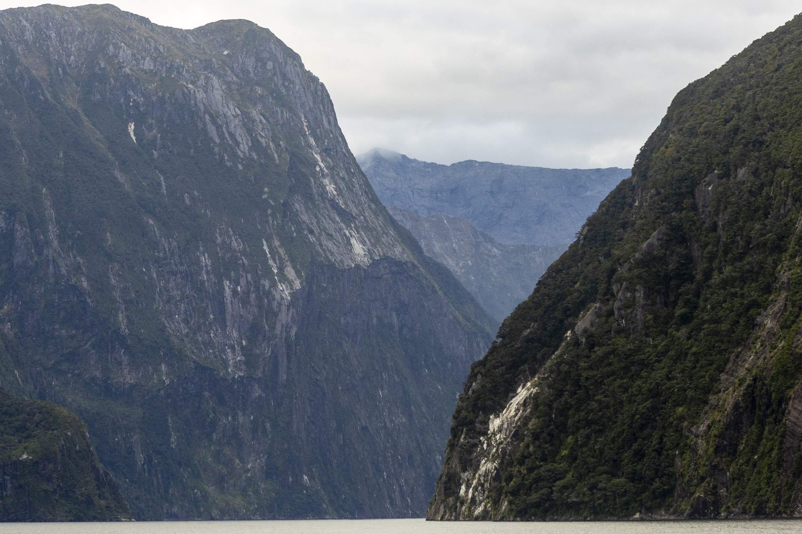
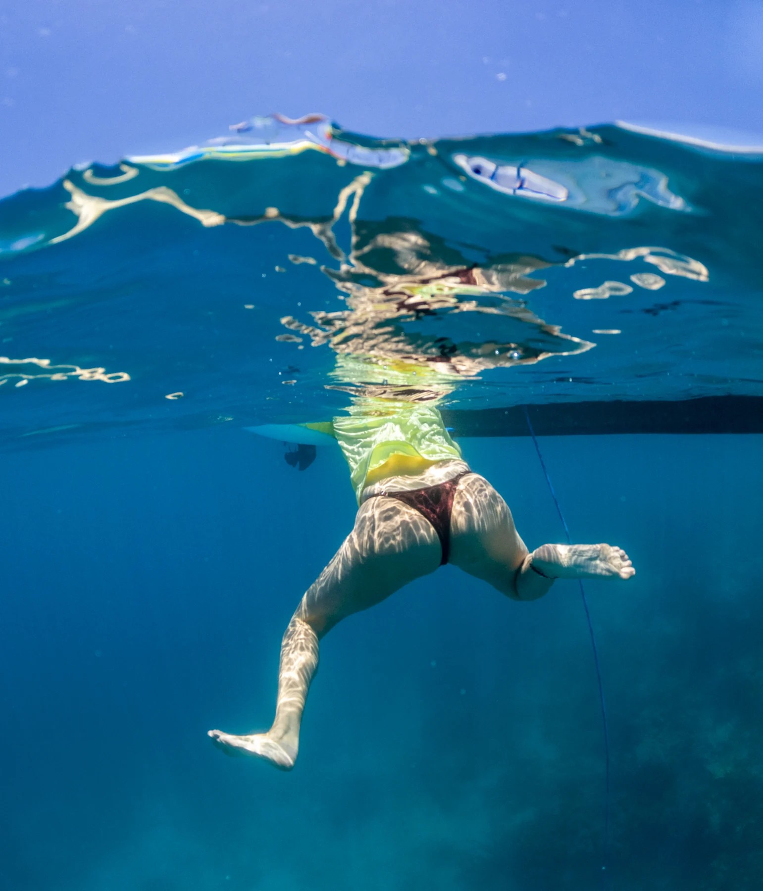
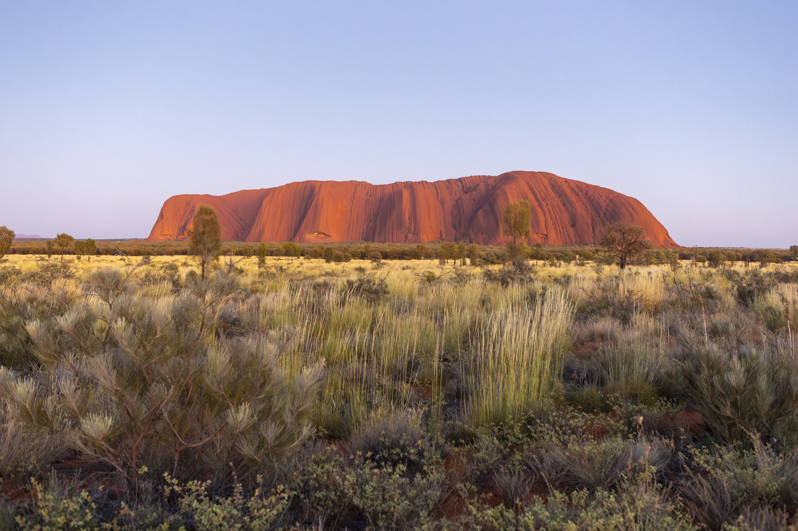

En cada viaje,
personas que cuidan.
Fotografía y vídeo para contar la cercanía de Insurance Travel con las agencias y sus viajeros.
DESCUBRIR LA PROPUESTALa confianza se construye
con personas.
Insurance Travel ofrece seguros de viaje y asistencia a través de agencias. En su comunicación destaca la cercanía y el cuidado a los viajeros.
Propongo una producción que muestre a vuestro equipo y a las agencias con las que trabajáis, junto a imágenes de los viajes que sus clientes preparan.
Fotografía y vídeo para que vuestro equipo los use en su comunicación o para desarrollar juntos una campaña completa.

Cerca de la agencia.
Cerca del viajero.
Una serie que una escenas reales de trabajo, conversaciones con agencias y momentos de viaje. Puede servir para presentar vuestra marca y explicar el valor del servicio con un tono cercano.
EXPLORAR LA PROPUESTAUna propuesta.
Distintas formas de contarla.
Ideas iniciales para adaptar con vuestro equipo a las necesidades de Insurance Travel y de sus agencias colaboradoras.
Las agencias, en primer plano +
Retratos y pequeñas historias de agentes colaboradores: cómo preparan cada viaje y qué necesitan de un proveedor de asistencia. El enfoque y la participación se acordarían con vosotros.
Viajes que inspiran +
Fotografía y vídeo de escapadas, viajes internacionales y experiencias compartidas para acompañar mensajes de marca. Destinos y públicos se decidirían con vuestro equipo.
Las personas de Insurance Travel +
Mostrar vuestro equipo con retratos, escenas de trabajo y conversaciones sobre la asistencia y la relación con las agencias, si queréis que participen.
Una campaña adaptada +
Podemos producir fotografía y vídeo para que vuestra agencia los incorpore a sus acciones, o desarrollar juntos el concepto y las piezas de una campaña según vuestro briefing.



Contenido hecho
para vuestro equipo.
Producción visual
Imágenes originales para la web, presentaciones comerciales y redes de Insurance Travel, adaptadas a las prioridades de vuestro equipo.
Campaña completa
Desarrollo creativo y producción junto a vuestro equipo, con colaboradores locales cuando el proyecto lo requiera.
Alcance, localizaciones y licencia de uso a acordar según el proyecto. Juan conserva la autoría y la propiedad del material.

Conocer el viaje
desde dentro.
Soy Juan Aizpuru, fotógrafo y realizador con base en Bilbao. He vivido diez años en Suiza y trabajo con un equipo profesional en proyectos de viajes, naturaleza y deporte.
Las imágenes de esta página son de mi archivo y muestran mi estilo. La producción para Insurance Travel se definiría con vuestro equipo.
VER MI TRABAJO¿Hablamos de lo que
podemos crear juntos?
Me gustaría conocer vuestras prioridades y conversar sobre cómo mostrar la relación entre vuestro equipo, las agencias y sus viajeros.
HABLEMOS DEL PROYECTO